光影包安装通用教程
这篇文档帮助新人从安装游戏开始，直到最终成功运行光影为止。
准备工作
由于光影需要用到模组，教程从安装游戏开始。
启动器
这篇文档主要使用 HMCL 和 PCL 2 两款国产启动器进行教学，你可以在下面获取这些启动器：
我们只着重于较为流行的 OptiFine 和 Iris。
检查驱动程序
参考 这篇文档 检查显卡以及是否安装和正确设置显卡驱动程序。
安装 Java
推荐安装 最新版 OpenJDK ，点击页面中的
Windows are available at <最新版 OpenJDK 下载链接>，并选择写有Windows/x64一行的zip。下载之后，解压到任意位置，并在 Windows 开始菜单中搜索
path，打开编辑系统环境变量选择
高级>环境变量…>系统变量，找到变量名为Path的变量选择
编辑>新建，然后键入<你的解压路径>\bin。保存后，重启电脑即可。
安装游戏和光影模组
推荐。性能最好，没有加载器干扰，没有模组，不会出现兼容性问题。
嵌入式安装需要启动器的支持。
进入
版本列表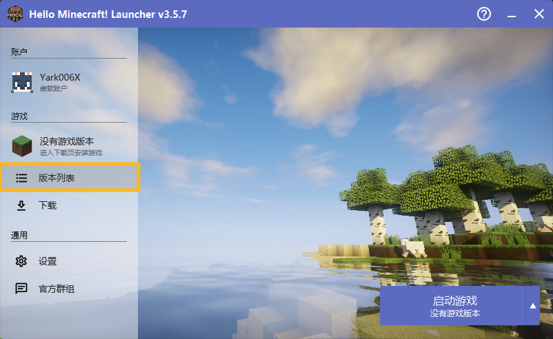 如果你想直接使用启动器所在目录，选择
当前目录如果你已有游戏目录，点击
添加游戏目录并将路径引导到<你的游戏文件夹>\.minecraft\。
点击
安装新游戏版本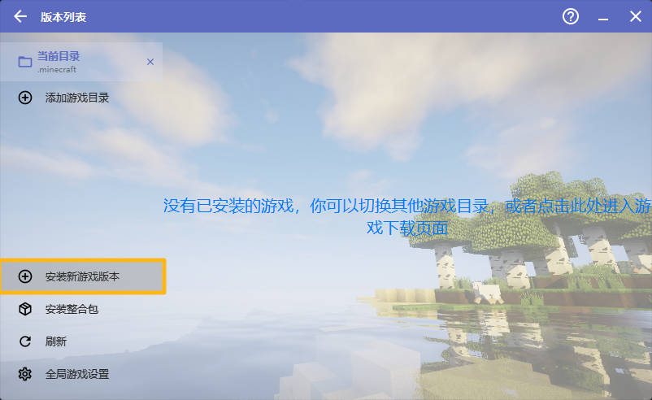 选择你需要的游戏版本。为了确保 OptiFine 特性完全，我们推荐游戏和 OptiFine 均为最新正式版。
在安装新游戏版本界面，选择 OptiFine 版本，并点击
安装。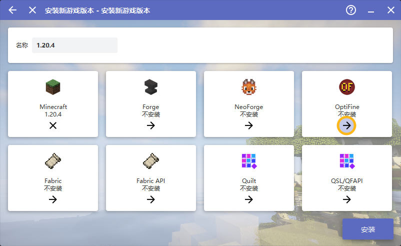
如果你想直接使用启动器所在目录，直接选择
下载游戏。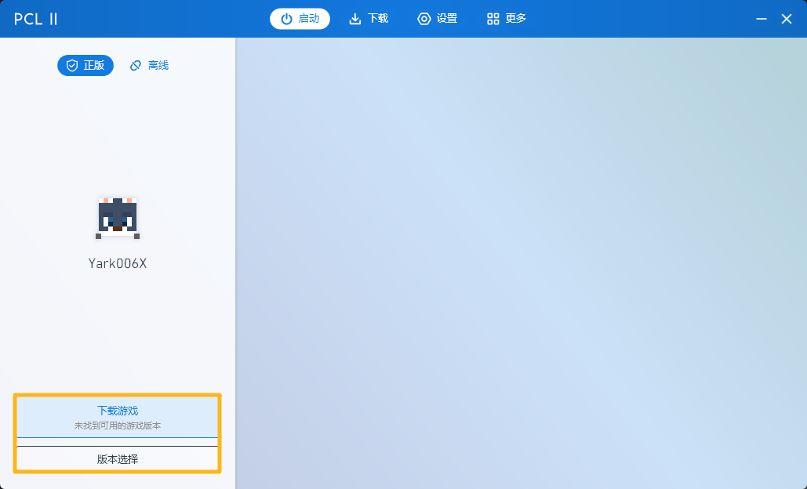 如果你已有游戏目录，点击
版本选择>添加已有文件夹并将路径引导到<你的游戏文件夹>\.minecraft\。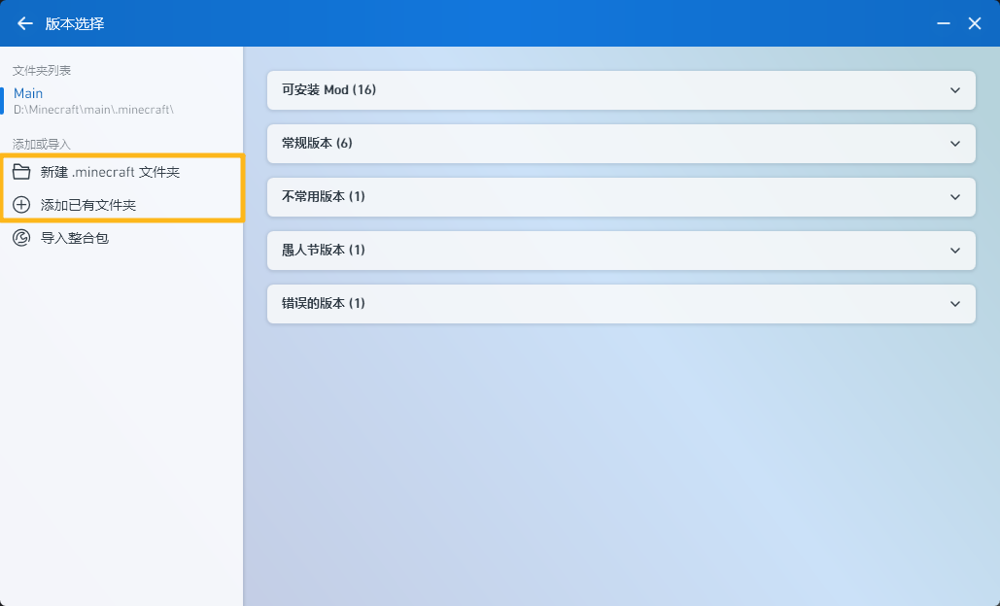
在
自动安装选项卡下，选择你需要的游戏版本。为了确保 OptiFine 特性完全，我们推荐游戏和 OptiFine 均为最新正式版。在安装新游戏版本界面，展开
OptiFine并选择版本，并点击开始安装。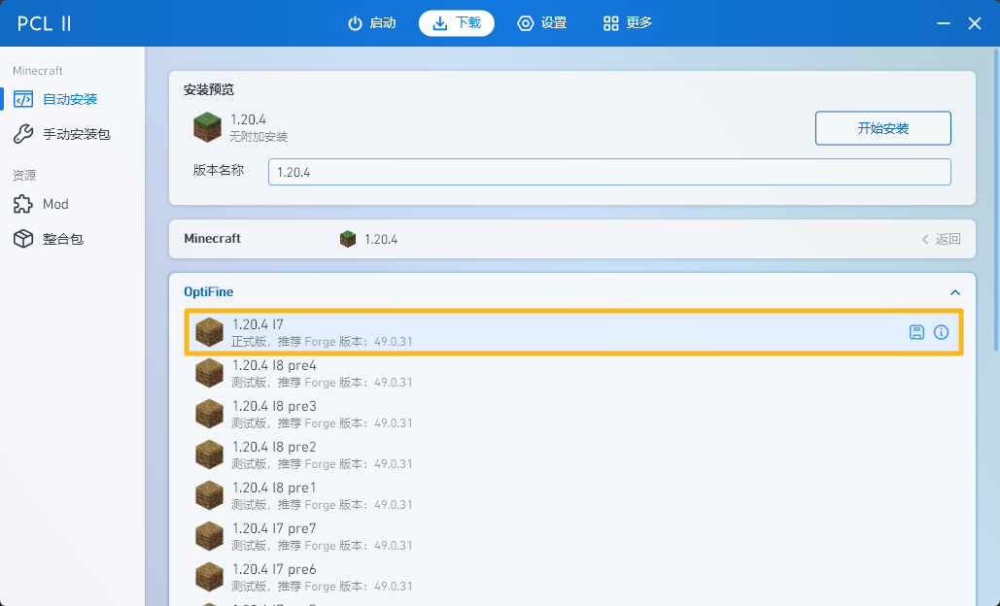
手动安装仅推荐在你使用 嵌入式安装 出现问题时使用。
寻找最新正式版的 OptiFine，点击
Download并等待下载页面弹出，然后再次点击Download官网 或 点击下载直接获取文件 中文站。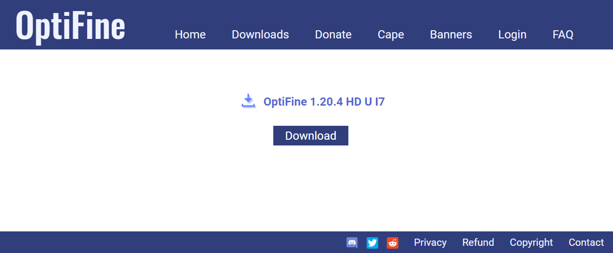 像
嵌入式安装一样， 仅安装最新 OptiFine 对应版本的游戏本体。运行下载好的文件，点击
...将路径定位到<你的游戏目录>\.minecraft\，然后点击Install。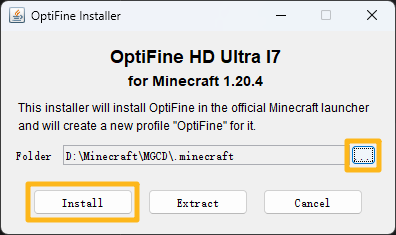 安装成功后，OptiFine 会弹出提示：
OptiFine is successfully installed.然后关闭安装程序。
当你安装成功之后，你的启动器版本列表里应该会新增一个
<原始游戏版本>-<已安装的 OptiFine>的游戏，这是安装了 OptiFine 的版本。
仅当你需要运行与 OptiFine 兼容的 Forge 模组时才这样做。
嵌入式安装需要启动器的支持。
像 纯净版 > 嵌入式安装 一样，在安装页面额外选择 Forge 版本即可。
嵌入式安装需要启动器的支持。
像
纯净版>手动安装1 ~ 3 步一样，下载 OptiFine。像
纯净版>嵌入式安装一样，但是仅安装 Forge。运行第一步下载好的文件，点击
Extract将路径定位到<你的游戏目录>\.minecraft\mods\未启用版本隔离 或<你的游戏目录>\.minecraft\versions\<对应游戏版本文件夹>\mods\启用版本隔离。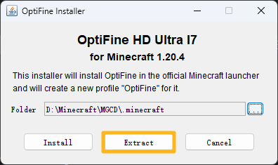 安装成功后，OptiFine 会弹出提示：
OptiFine is successfully extracted.
手动安装仅推荐在你使用 嵌入式安装 出现问题时使用。
像
纯净版>手动安装1 ~ 3 步一样，下载 OptiFine。访问 Forge 官网 ，寻找对应 OptiFine 和游戏兼容版本的 Forge。
选择
Download Latest块下方的Installer。像
纯净版>嵌入式安装一样，但是仅安装对应版本的游戏本体。运行下载好的文件，选择
Install client，然后点击...将路径定位到<你的游戏目录>\.minecraft\，然后点击确定。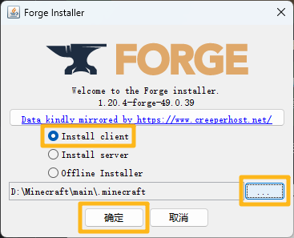 安装成功后，Forge 会弹出提示：
Successfully installed client profile forge for version <游戏版本>-forge-<Forge 版本> into launcher, and downloaded [N] libraries像
嵌入式安装 Forge，将 OptiFine 作为模组加载第三步一样，安装OptiFine。当你安装成功之后，你的启动器版本列表里应该会新增一个
<原始游戏版本>-<已安装的 Forge>的游戏，这是安装了 Forge 的版本。
不推荐！仅当你需要运行与 OptiFabric 兼容的 Fabric 模组时才这样做。
访问 OptiFabric 的 CurseForge 页面 确认并下载 OptiFabric 兼容的最新版本 OptiFine。
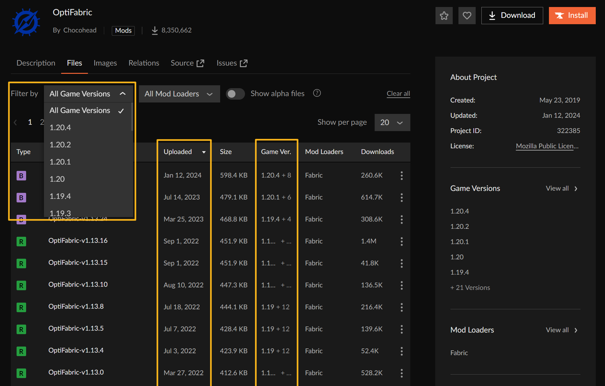 像
纯净版>手动安装1 ~ 2 步一样，但是要下载最新 OptiFabric 兼容的 OptiFine。安装 Fabric
嵌入式安装需要启动器的支持。
像
纯净版>嵌入式安装一样，但是仅安装 Fabric 和 Fabric API。手动安装仅推荐在你使用
嵌入式安装出现问题时使用。像
纯净版>嵌入式安装一样， 仅安装最新 OptiFabric 对应版本的游戏本体。访问 Fabric 官网 ，点击
Download>Download for Windows下载 Fabric 安装器。运行下载好的文件，选择
客户端，将路径定位到<你的游戏目录>\.minecraft\，然后点击安装。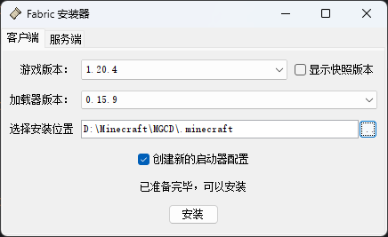 安装成功后，Fabric 会弹出提示：
<Minecraft 版本>的Fabric加载器<Fabric 版本>已成功安装。 许多MOD还要求您将Fabric API放入mods文件夹。直接点击弹出窗口的 Fabric API 然后点击
Files，或者返回 第一步的页面 ，点击Download Fabric API，然后在 CurseForge 页面像上层第一步一样下载对应版本 Fabric API。将下载的 Fabric API 拖入
<你的游戏目录>\.minecraft\mods\未启用版本隔离 或<你的游戏目录>\.minecraft\versions\<对应游戏版本文件夹>\mods\启用版本隔离。当你安装成功之后，你的启动器版本列表里应该会新增一个
<原始游戏版本>-<已安装的 Fabric>的游戏，这是安装了 Fabric 的版本。
将下载的 OptiFabric 拖入
<你的游戏目录>\.minecraft\mods\未启用版本隔离 或<你的游戏目录>\.minecraft\versions\<对应游戏版本文件夹>\mods\启用版本隔离。像
和 Forge 一同安装>嵌入式安装 Forge，将 OptiFine 作为模组加载第三步一样，安装 OptiFine。
不推荐！仅当你确定你所使用的光影与 Iris 兼容且需要 Iris 独占特性 ，或需要运行与 Sodium 兼容 （通常还需要额外安装 Indium (Modrinth) (CurseForge) 来保证兼容性）的 Fabric 模组时才这样做。
访问 Iris 的 Modrinth 页面 ，选择对应游戏版本的 Iris，点击
Download。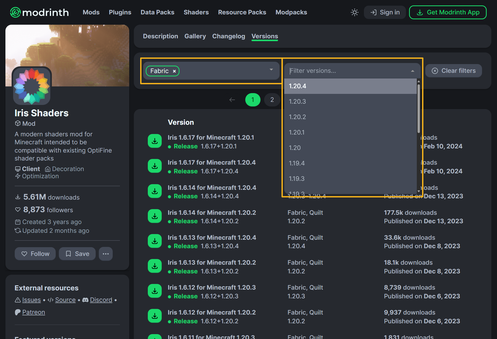 像
OptiFine>和 Fabric 一同安装第三步一样，安装 Iris 对应游戏版本的 Fabric。将下载的 Iris 拖入
<你的游戏目录>\.minecraft\mods\未启用版本隔离 或<你的游戏目录>\.minecraft\versions\<对应游戏版本文件夹>\mods\启用版本隔离。访问 Sodium 的 Modrinth 页面 ，重复 2 ~ 3 步，安装 Sodium。
配置游戏
在启动游戏之前，检查你的启动器设置：

如果你的游戏目录有其他游戏版本，并且你希望单独对这个版本进行设置，勾选
启用游戏特定设置。否则，点击
编辑全局版本设置。

这里简单列举一下这个页面各个选项的作用
- Java 路径
决定你的游戏所用的 Java，确保你按照 前文 所述，配置好了 Java，然后选择
自动选择合适的 Java。- 版本隔离
默认模式将游戏的各种资源文件（光影、资源包、存档）放在<你的目录>\.minecraft\下，并且和其他未开启版本隔离的游戏共享。各版本独立模式将游戏的资源文件放在<你的目录>\.minecraft\versions\<对应游戏版本文件夹>\下，并且不与其他任何版本共享。自定义模式由你自己决定游戏资源文件的存放位置，并且与其他同位置的的版本共享。
- 游戏内存
决定游戏分配的内存，最好小于等于
设备总内存的一半，且不大于 16 GB。- 自动分配内存
勾选后
游戏内存选项变为最低内存分配，根据当前系统是否空闲和版本预估内存要求动态分配内存，但是不超过最低内存分配。
- 启动器可见性
决定游戏启动后启动器的行为，保留启动器可能在后台占用资源，但是如果游戏崩溃了，启动器可以输出崩溃日志。
- 游戏窗口分辨率
决定你游戏窗口的默认大小，如果你不确定，保持其为原样。
- 查看日志
开启后会额外启动一个游戏日志窗口，如果不进行调试，不需要开启。
- 进程优先级
游戏在 Windows 线程上的优先级，优先级越高，游戏越会被 CPU 优先处理，在一定程度上可以缓解 CPU 瓶颈，但是并不能提高太多性能，还可能导致游戏崩溃。
- 服务器地址
如果填写，在启动游戏后会尝试自动加入服务器。
- 高级设置
不要动。

如果你的游戏目录有其他游戏版本，并且你希望单独对这个版本进行设置，点击
版本设置。否则，点击顶栏的
设置。

这里简单列举一下这个页面各个选项的作用
- 离线皮肤
离线模式下玩家所使用的皮肤
随机：随机从 默认皮肤和模型 中抽取。
Steve / Alex：固定史蒂夫或艾利克斯皮肤。
正版皮肤：使用下方
正版玩家名所填玩家的皮肤。自定义：从电脑上选择其他皮肤。
- 游戏窗口标题
Windows 窗口上的标题，将鼠标停留在输入框上可以查看格式化代码。
- 自定义信息
在游戏中左下角和 F3 调试界面左上角的信息。
- 版本隔离
关闭模式将游戏的各种资源文件（光影、资源包、存档）放在<你的目录>\.minecraft\下，并且和其他未开启版本隔离的游戏共享。隔离<版本>模式将符合要求版本的资源文件放在<你的目录>\.minecraft\versions\<对应游戏版本文件夹>\下，并且不与其他任何版本共享。
- 启动器可见性
决定游戏启动后启动器的行为，保留启动器可能在后台占用资源，但是如果游戏崩溃了，启动器可以输出崩溃日志。
- 进程优先级
游戏在 Windows 线程上的优先级，优先级越高，游戏越会被 CPU 优先处理，在一定程度上可以缓解 CPU 瓶颈，但是并不能提高太多性能，还可能导致游戏崩溃。
- 游戏窗口
决定你游戏窗口的默认大小，如果你不确定，设置为
默认大小。- 游戏 Java
决定你的游戏所用的 Java，确保你按照 前文 所述，配置好了 Java，然后选择
自动选择合适的 Java。- 游戏内存
决定游戏分配的内存，最好小于等于
设备总内存的一半，且不大于 16 GB，如果你不确定，将其设置为自动配置。- 高级启动选项
不要动。

启动游戏后，配置视频设置，参见 视频设置和相关显示问题。
检查并安装光影
检查你的光影是否符合下列要求：
打开压缩包或文件夹后应有名为
shaders的文件夹。└─ shaderpacks └─ <光影名称 | 光影名称.zip> # 仅支持未加密的 .zip 压缩包 └─ shaders # 重要！ └─ <着色器程序相关文件和文件夹>确保不是原版光影或 Canvas 光影，否则你应当直接像 安装资源包 那样安装。
检查完成之后，将含有 shaders 的文件夹或压缩包放入 shaderpacks 文件夹并选中即可。